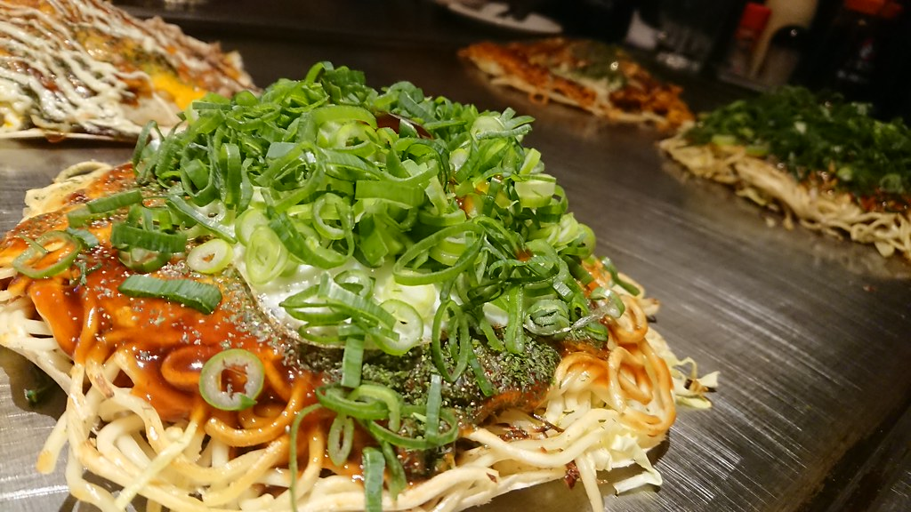
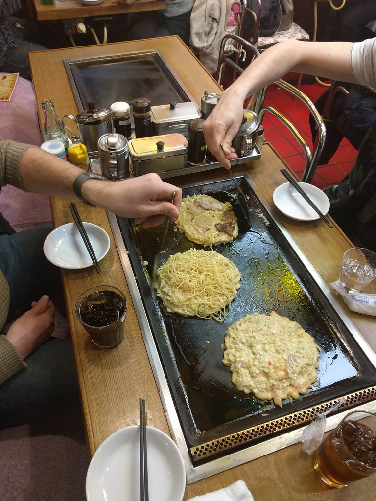

★★★★★
新松戸で広島焼きを食べるなら、まず名前が挙がるお店。人気店のため満席の日も多いですが、看板の広島焼きはもちろん、タコ刺身やヒラメのカルパッチョ、オムライスなどの一品料理もどれも新鮮でハズレなし。特に大根サラダはボリューム満点でシャキシャキの食感がクセになります。注文を受けてから一品ずつ仕上げるので少し時間はかかりますが、その分出来立てを楽しめます。
常連のお客様より・Googleクチコミより

看板メニュー
広島風お好み焼きは、生地・そば・卵を鉄板の上で一枚ずつ層に重ねて焼き上げる料理です。当店では、そのひと手間をカウンター越しにご覧いただきながら、注文を受けてから一枚ずつ丁寧に焼き上げています。
看板メニューの「広島 豚玉」(1,320円)は、焼きたての一口目こそあっさりとした印象ですが、食べ進めるほどに具材の味がなじみ、優しい仕上がりへと変わっていくのが持ち味です。ソースと生地、そばの香ばしさが少しずつ調和していく変化も、ぜひ最後まで楽しんでいただきたいポイントです。
ピカピカに磨かれた鉄板の上で、一枚ずつ丁寧に焼き上げていく様子は、待つ時間さえも味わいのひとつです。
お品書き
仕入れや仕込みの都合で内容が変わる場合がございます。最新のおすすめは店頭またはお電話でご案内しています。

こだわり
当店の料理は、ご注文をいただいてから一品ずつ鉄板の上で仕上げていきます。そのため多少お時間をいただくこともございますが、出来立てをそのままお席までお届けできるのは、この作り方ならではの価値だと考えています。
カウンター席からは、鉄板の上で一品ずつ仕上がっていく様子を間近でご覧いただけます。ピカピカに磨かれた鉄板に照り返る炎の色や、湯気の立ち上る音も含めて、ここでしか味わえない時間です。
ご主人はいつも気さくに声をかけてくださり、スタッフ一同も丁寧な対応を心がけております。初めての方も、常連の方も、気負わず落ち着いて過ごしていただけるお店です。
お酒とノンアルコール
鉄板料理と共に、お酒の種類にもこだわってご用意しております。きりっと冷えた一杯から、ゆっくりと味わいたい一杯まで、料理との組み合わせをお楽しみください。
お酒を飲まれない方、車でお越しの方のために、ノンアルコールビールもご用意しています。どなたでも気兼ねなく、食事とお酒(またはノンアルコール)の時間を楽しんでいただけます。
カップルでのお食事、ご家族でのお集まり、気の合う仲間との一席など、ゆっくりと会話を楽しみたい方にこそおすすめしたいお店です。
店内紹介
当店はカウンター席と4人掛けのテーブル席をご用意した、少人数制の落ち着いたお店です。鉄板を眺めながら過ごせるカウンター席、ゆったり会話を楽しめるテーブル席と、その日の気分に合わせてお選びいただけます。
席数が限られているため、満席・貸切となる日も多くございます。当日ご案内できる場合もございますが、確実にお席をご用意するためにも、事前のご予約をおすすめしております。
新松戸駅から徒歩5分、大通りから少し入った隠れ家のような立地です。
代表(マスター)からのひとこと
一品一品、鉄板の前でお客様の顔を見ながらお作りしています。焼き上がるまで少しお時間をいただくこともありますが、その分、出来立てのおいしさをお届けできるよう心がけております。
新松戸という土地で長く営んでこられたのも、足を運んでくださる皆様のおかげです。カウンター越しに交わす何気ない会話も、当店の楽しみのひとつです。お好み焼きだけでなく、鉄板の一品料理やお酒との組み合わせも、ぜひゆっくりと味わいにいらしてください。
お客様の声
実際にご来店いただいたお客様から、Googleクチコミを通じて多くの声をいただいています。広島焼きはもちろん、一品料理やカウンター越しの雰囲気についても、率直な感想をお寄せいただいております。以下はその一部をご紹介します。
新松戸で広島焼きを食べるなら、まず名前が挙がるお店。人気店のため満席の日も多いですが、看板の広島焼きはもちろん、タコ刺身やヒラメのカルパッチョ、オムライスなどの一品料理もどれも新鮮でハズレなし。特に大根サラダはボリューム満点でシャキシャキの食感がクセになります。注文を受けてから一品ずつ仕上げるので少し時間はかかりますが、その分出来立てを楽しめます。
常連のお客様より・Googleクチコミより
広島焼きを初めて食べましたが、焼きそばが入っていてボリュームがあり大満足。オムライスもとろとろの半熟仕上げで美味しく、ほうれん草のソテーもおすすめです。お酒の種類も豊富で、鉄板で焼く様子を間近で見られるカウンター席が魅力。スタッフの方々も優しく、居心地の良いお店でした。
初めてご来店のお客様より・Googleクチコミより
予約なしの飛び込みでしたが、なんとか入ることができました。予約しておいた方が安心です。料理はどれも美味しく、ビールもキンキンに冷えていて最高でした。ご主人の人柄も温かく、また訪れたいお店です。
当日飛び込みでご来店されたお客様より・Googleクチコミより
平日の夜に予約をして初めて訪れました。カウンター4席とテーブル席があり、ほぼ満席の人気ぶり。レバーペーストから既に美味しく、広島焼きは食べ進めるほどに味がなじむ上品な仕上がり。ハンバーグも素材の味を活かした繊細な味わいで、料理・雰囲気・接客のすべてに満足できた一軒でした。
平日の夜に予約してご来店されたお客様より・Googleクチコミより
ACCESS / RESERVATION
当店は千葉県松戸市新松戸にございます。新松戸駅から徒歩5分ほどの、少し落ち着いた立地です。
満席・貸切となる日も多い人気店のため、確実にお席をご用意したい場合は事前のご予約をおすすめしております。当日のお問い合わせも歓迎しておりますので、まずはお電話にてお気軽にご相談ください。
営業時間は変更となる場合がございますので、詳しくはお電話にてご確認ください。
047-701-5513
(タップして発信)